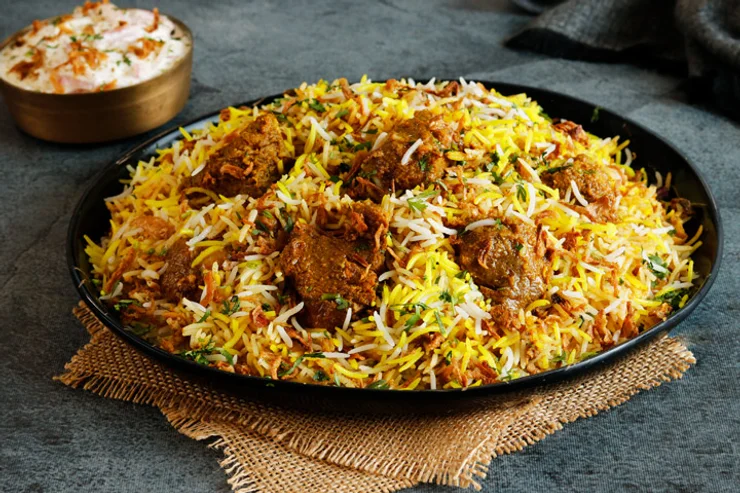

Mutton Biryani

About
Biryani is a mixed rice dish originating among the Muslims of South Asia. It is made with rice, some type of meat (chicken, beef, goat, lamb, prawn, or fish) and spices. To cater to vegetarians, in some cases it is prepared without any meat, substituting vegetables for the meat.Sometimes eggs and/or potatoes, are added.
Biryani is one of the most popular dishes in South Asia, as well as among the diaspora from the region. Similar dishes are also prepared in other parts of the world such as in Iraq, Myanmar, Thailand, and Malaysia.Biryani is the single most-ordered dish on Indian online food ordering and delivery services, and has been labelled as the most popular dish overall in India
Ingredients
4 Servings
- 3/4 cup and 2 and 1/2 teaspoon basmati rice
- 3/4 green cardamom
- 3 and 1/4 tablespoon ghee
- 1/2 bay leaf
- 1/2 tablespoon ginger paste
- 3 and 1/4 tablespoon cashews
- 1/2 teaspoon garam masala powder
- 3/4 dashes saffron
- 400 grams mutton
- 3 and 1/4 tablespoon fresh cream
- 1 and 1/2 red chilli
- 3/4 teaspoon cumin
- 1/2 tablespoon garlic paste
- 3 and 1/4 tablespoon raisins
- 1 and 1/2 tablespoon milk
- 1/2 cinnamon stick
For Marination
- 1/3 cup and 1 tablespoon yoghurt (curd)
- 3 and 1/4 tablespoon mustard oil
- 1/2 teaspoon turmeric
- star anise as required
- 1/2 teaspoon cumin powder
- salt As required
- 1/2 teaspoon coriander powder
- 1/2 teaspoon red chilli powder
For Garnishing
- 1/3 cup and 1 tablespoon onion
- 1/2 teaspoon mint leaves
- 1/2 teaspoon coriander leaves
- 1/2 teaspoon kasoori methi powder
Steps
- Wash the mutton
Begin with washing the mutton pieces and drain the excess water. Make sure you squeeze out the excess water and prick the meat using a fork, this will help in better absorption of the marinade.
- Marinate the mutton
Now, add all the marination ingredients to it. Rub well with your fingers so that the marination spreads evenly. Ideally, you should leave this meat in the refrigerator overnight. If you have sudden guests coming, then marinate and keep aside for 1-2 hours.
- Boil the rice and heat ghee in a pan
Meanwhile, parboil the rice and keep it aside after spreading on a plate. If you overcook your rice, it will turn sticky when mixed with the mutton. Dissolve the saffron in ¼ cup milk and set aside. Heat some ghee in a pan and fry the cashews and the raisins.
- Fry the onions
Slice the onions and fry them in the same ghee. Reserve half of the onions and keep them aside. Remove the mutton from the refrigerator and allow it to come down to room temperature. This step is important for the proper cooking of the meat. Heat ghee in a deep bottomed vessel. It should have a tight-fitting lid. You can also use a pressure cooker with the whistle removed.
- Cook the marinated meat
Once the ghee is sufficiently hot, add the whole spices-cinnamon, bay leaf, cardamoms and cumin. Allow them to splutter. Add whole red chillies and marinate the mutton pieces. Add the onions, ginger and garlic paste and cook covered till the mutton is tender.
- Layer the rice & mutton
Now add garam masala and roast the mutton till the entire water is absorbed and oil separates from it. Remove the mutton from the pan. In the same pan add a layer of cooked rice, followed by a layer of mutton and then again a layer of rice. Between each layer, sprinkle some dry fruits.
- Let the biryani cook for 10-12 minutes
The topmost layer should be of rice. Now add the Kesar milk and cream. Pour this evenly over the rice. Cover the lid and cook on low flame for 10-12 minutes.
- Garnish and serve
Remove from flame and garnish with onions, mint, kasoori methi, coriander and serve hot with raita. Make sure you try this recipe, rate it and let us know how it turned out to be.
Thanks for visiting!!